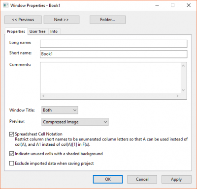
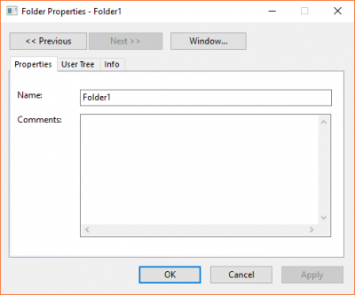
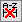

Sie können den Grad der Schattierung beeinflussen, indem Sie den Wert der LabTalk-Systemvariablen @COR ändern.
| Dialog Fenstereigenschaften | Dialog Ordnereigenschaften |
 |
 |
Zum Aufrufen des Dialogs Ordnereigenschaften gibt es mehrere Möglichkeiten:
Zum Aufrufen des Dialogs Fenstereigenschaften gibt es mehrere Möglichkeiten:
Die folgenden Schaltflächen befinden sich oben im Dialog.
|
Mit den Schaltflächen Zurück und Weiter können Sie von einem Ordner/Fenster zum anderen wechseln. | |
| Mit der Schaltfläche Fenster/Ordner können Sie zwischen den Dialogen der Eigenschaften von Ordner und Fenster unter diesem Ordner wechseln. Hinweis: Wenn es in einem Ordner kein Unterfenster gibt, wird die Schaltfläche Fenster abgeblendet angezeigt. |
page.xlcolname=0 im Skriptfenster aus, um die Excel-ähnliche Beschränkung der Spaltenkurznamen zu deaktivieren. Weitere Informationen finden Sie unter FAQ-849 Kann ich die Zellennotation in meinen Arbeitsmappen ausschalten bzw. selektiv steuern?
in einer aktuellen Version sehen, ist SCN in der Arbeitsmappe ausgeschaltet. Sie können dies feststellen, indem Sie den Status des Kontrollkästchens Zellennotation für Tabellenkalkulationsblätter prüfen.Beachten Sie, dass schattierte Zellen immer leer sind, dass aber auch nicht schattierte Zellen leer sein können, wenn sie zwischen Zellen fallen, die etwas enthalten -- auch wenn dieses Etwas nur ein Symbol für einen fehlenden Wert ist ("--").
Sie können den Grad der Schattierung beeinflussen, indem Sie den Wert der LabTalk-Systemvariablen @COR ändern. |
Hinweis: Im Fall von Daten, die mittels Datenkonnektoren importiert wurden, ist dieses Kontrollkästchen äquivalent zum Menü Importierte Daten beim Speichern ausschließen, auf das Sie über Rechtsklick auf das Symbol des Datenkonnektors Zugriff haben.
Die Registerkarte Anwenderbaum des Dialogs Ordner-/Fenstereigenschaften ermöglicht es Ihnen, den Anwenderbaum, der mit dem aktuellen Ordner/Fenster verbunden ist, anzuzeigen und zu bearbeiten. Sie ist nicht auf Notizfenster anwendbar.
Um den Anwenderbaum zu bearbeiten, klicken Sie mit der rechten Maustaste auf einen Baum oder einen Knotenpunkt und wählen Sie anschließend einen gewünschten Befehl im Kontextmenü:
| Umbenennen | Der aktuelle Baum oder Knoten wird umbenannt oder neu beschriftet. Der Dialog Baumknoten umbenennen wird geöffnet. Beachten Sie, dass der Baum- oder Knotennamen nur Buchstaben und Zahlen unterstützt. Außerdem sollte das erste Zeichen ein Buchstabe sein. |
|---|---|
| Löschen | Dieser Befehl löscht den aktuellen Baum oder Knoten. |
| Baum hinzufügen | Dieser Befehl fügt auf dieser Registerkarte einen Anwenderbaum hinzu. |
| Knoten hinzufügen | Wählen Sie diese Option, um einen neuen Knoten unter den aktuellen Baum oder Knoten hinzuzufügen. Dies öffnet den Dialog Baumknoten hinzufügen und ermöglicht es Ihnen, den Namen und den Typ des Knotens festzulegen. Verfügbare Typen beinhalten Numerisch, Text und Zweig. |
|
Hinweis: Die Werte einiger Knoten können nicht bearbeitet werden, z.B. die Knoten, die beim Importieren automatisch hinzugefügt werden. In diesem Fall werden die Werte blau angezeigt. |
Die Registerkarte Info des Dialogs Ordner-/Fenstereigenschaften zeigt die grundlegenden Informationen des aktuellen Ordners/Fensters, einschließlich Typ, Größe, Inhalt, Erstellungsdatum, Speicherort etc.
|
Hinweis: Sie können den Blattnamen und die Kommentare im Dialog Name und Kommentare für Blatt hinzufügen. |